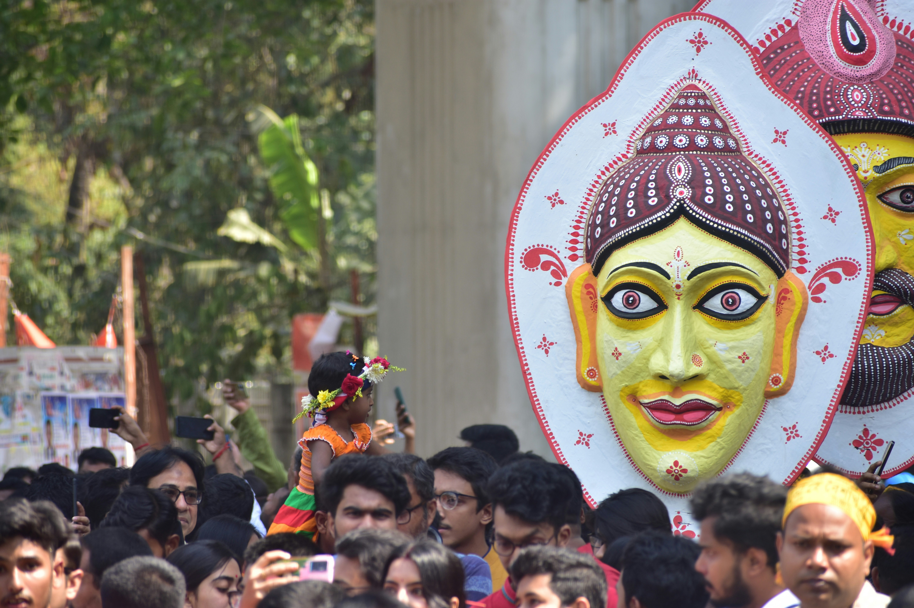

The culture of Bangladesh is rich, colorful, and deeply connected to the Bengali language, traditions, music, literature, and festivals. Bangladeshi culture has developed over centuries through the influence of ancient Bengal, Buddhism, Hinduism, Islam, and local folk traditions.The people of Bangladesh are known for their hospitality, strong family values, and love for art, poetry, and music.

Along with the beginning of the Bengali New Year, Pohela Boishakh indicates the beginning of the new Bengali fiscal year. On the 1st day of the Bengali New Year, business owners start a new ledger (popularly known as "Halkhata"), clearing out the old one. Following the age-old customs, business people or traders offer sweets to their clients and warmly welcome their new and old customers to start businesses and transactions